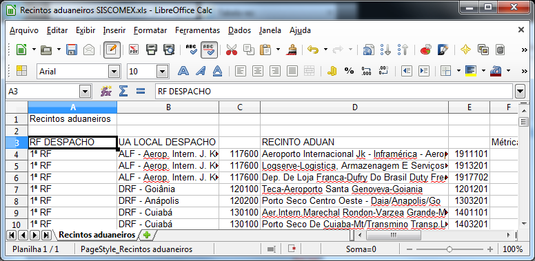

Tabela de Recinto
Como importar
tabela de recintos do SISCOMEX?
1. No menu inicial vá em UTILITÁRIOS >> IMPORTAR TABELA DE RECINTOS DO SISCOMEX
2. Será aberto uma janela para a seleção da planilha.

3. Após selecionar e clicar em "Abrir" a tabela será importada do SISCOMEX.
3. A planilha a ser utilizada deverá seguir o modelo disponível na pasta "PlanilhasModelo/Recintos aduaneiros SISCOMEX.xls". A planilha pode ser gerada no sistema DWAduaneiro, conforme exemplo abaixo:
